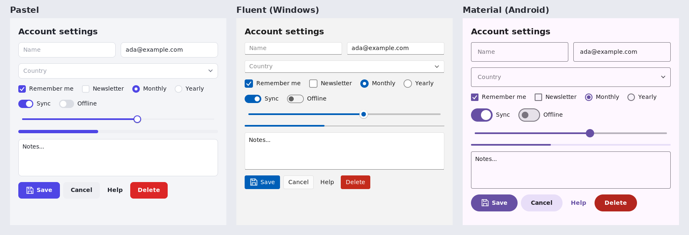

#Styles: Fluent, Material and your own
Pastel draws every control itself, so a form looks the same everywhere. A style changes how the controls look: their sizes, corners, borders, focus and colors. Like Delphi's FireMonkey styles, each platform has its own, and you can write your own in a style file (Delphi's TStyleBook).
| Style | Looks like | Buttons | Edits |
|---|---|---|---|
pastel |
Pastel's own look, the same everywhere | 8 px corners | a box, a soft ring when focused |
fluent |
Windows 11 | 32 px high, small corners, a border on secondary buttons | a line at the bottom, the accent when focused |
material |
Android (Material 3) | 40 px high, round ends; flat buttons are text buttons in the accent | an outline, thicker when focused |
auto |
the platform it runs on: Fluent on Windows, Material on Android, Pastel elsewhere |
The style also sets checkboxes, radio buttons, switches, sliders, progress bars, the corners of lists, popups and dialogs, and the order of a dialog's buttons (OK Cancel on Windows).

#Choosing the style
In assets/theme.toml:
style = "auto"
New apps (pastel new app) have this line. Without it, an app uses pastel, as before 2.1. style = "fluent" gives every platform the Windows look.
The light and dark themes stay: every style has both, and Appearance on the main form chooses one as before.
From code, while the app runs (the form is laid out and drawn again):
uses Pastel.UI;
UseStyle('material'); // False: there is no such style
if UIStyle.Name = 'fluent' then ...
To try one without changing the files: PASTEL_STYLE=fluent pastel run. The designer in VS Code has a style box in its top bar, and pastel preview takes --style:
pastel preview src/forms/Home.pform -o home-android.png --style material
#Your colors over a style
The colors of assets/theme.toml are put over the style's colors, in every style:
style = "auto"
accent = "#0A7D5A"
[dark]
accent = "#5EE0B0"
Names: accent, on_accent, background, surface, text, text_muted, placeholder, secondary, border, outline (the border of edits in Fluent and Material), danger, disabled, tooltip_back, tooltip_text, radius, font_size. Hover and pressed shades follow the color.
#A style file
A style of your own is a TOML file in assets/styles/; its file name is its name. It starts from a base style and changes what it says:
# assets/styles/company.pstyle
base = "material" # pastel, fluent, material, or another style file
radius = 6 # cards, lists, grids
[colors] # as in theme.toml
accent = "#0A7D5A"
[colors.dark]
accent = "#5EE0B0"
[button]
padding_x = 32 # the room left and right of the text, together
padding_y = 16 # above and below, together
radius = 6 # 999: round ends
border = 0 # a border on secondary buttons
bold = true
[field] # edits, memos, combo boxes, date pickers
look = "box" # box, underline (Fluent) or outline (Material)
radius = 6
padding_x = 12
padding_y = 20
Use it in assets/theme.toml with style = "company". The designer and pastel preview find the project's style files too.
| Section | Values |
|---|---|
| (top) | base, radius |
[colors], [colors.dark] |
the theme's colors, as in theme.toml |
[button] |
padding_x, padding_y, radius, border, bold |
[flat_button] |
padding_x, padding_y, accent (text in the accent color), overlay (hover shades what is under it) |
[field] |
look (box, underline, outline), radius, padding_x, padding_y |
[check] |
size, radius (checkboxes and radio buttons) |
[switch] |
look (pill, fluent, material; sliders and radio buttons follow it too) |
[slider] |
thumb (the knob's radius) |
[progress] |
height |
[popup], [dialog] |
radius; [dialog] also default_first (OK Cancel) and flat_buttons |
[focus] |
look: ring (a soft ring of the accent) or outline (a line in the text color, when the keyboard moves the focus) |
A mistake is said when the app starts (on the console) and by pastel check, with the line: button.height = 40: "button.height" is not a style value.
#Looks: StyleLookup
A style file can have named looks, and a control uses one with StyleLookup (as in FireMonkey):
[look.BigGreen]
color = "#16A34A"
hover_color = "#15803D" # without it: a little darker
pressed_color = "#166534"
text_color = "#FFFFFF"
padding_y = 30
radius = 12
[look.BigGreen.dark] # only what changes in the dark theme
color = "#22C55E"
[look.Warning]
text_color = "#B45309"
font_size = 16
bold = true
object PayButton: TButton
Text = 'Pay now'
StyleLookup = 'BigGreen'
end
object Note: TLabel
Text = 'The offer ends today'
StyleLookup = 'Warning'
end
| Control | What a look changes |
|---|---|
TButton |
color, hover_color, pressed_color, text_color, border_color, border_width, radius, padding_x, padding_y, font_size, bold |
TLabel |
text_color, font_size, bold (when the label does not set them itself) |
TColumn, TRow, TPanel, TCard... |
color, border_color, border_width, radius (when the box does not set them itself) |
TEdit, TMemo, TComboBox, TDatePicker |
color, border_color, border_width, radius, padding_x, font_size |
A look belongs to a style: when the app uses another style, StyleLookup finds nothing there and the control looks as the style says. A style made on another (base = "company") has its looks. pastel check warns about a StyleLookup that no style file in assets/styles/ has.
#Your own controls in the style
A control of your own reads the style to fit in:
procedure TStarRating.Paint(C: TCanvas32);
begin
C.FillRoundRect(Bounds.X, Bounds.Y, Bounds.W, Bounds.H, StyleRadius(UIStyle.ButtonRadius), Theme.Surface);
if IsFocused then
DrawFocus(C, Self, Bounds, Theme.Radius); // a ring or an outline, as the style draws it
...
end;
PaintField draws the box of an edit in the style, and FieldHeight(LineHeight) gives its height. See Writing components.